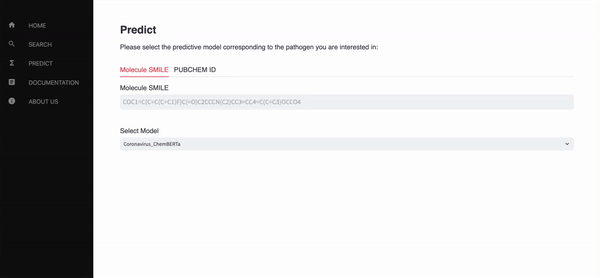

- CidalsDB
- timeKAN
- Cuda Selector
- GKAN
- HilbertHear
- Streamlit Menu

CidalsDB is an open resource on anti-pathogen molecules that provides a chemical similarity-based browsing function and an AI-based prediction tool for the 'cidal' effect of chemical compounds against pathogens. These include Leishmania parasites1 and Coronaviruses (SARS-Cov, SARS-Cov-2, MERS). CidalsDB serves as an evolutive platform for democratized and no-code Computer-Aided Drug Discovery (CADD).
A simple tool to select the optimal CUDA device based on memory, power, temperature, or utilization. It supports fallback to CPU and custom sorting functions. Supports CUDA devices on Linux and MPS devices on macOS.
Install
pip install cuda-selectorFull documentation can be found here.
Here's an example usage:
from cuda_selector import auto_cuda
# Select the CUDA device with the most free memory
device = auto_cuda()
# Select the CUDA device with the lowest power usage
device = auto_cuda(criteria='power')
# Select the CUDA device with the lowest utilization
device = auto_cuda(criteria='utilization')
# Select multiple devices (top 3) based on memory, with a custom sorting function
device_list = auto_cuda(n=3, sort_fn=lambda d: d['mem'] * 0.7 + d['util'] * 0.3)
# Exclude a specific device (e.g., device 0) from selection
device = auto_cuda(exclude={0})
# Apply thresholds for power and utilization
device = auto_cuda(thresholds={'power': 150, 'utilization': 50})A PyTorch implementation of a Kolmogorov-Arnold Network (KAN) adapted for graph-structured data The model architecture consists of several key components:
- Input Layer: A linear transformation is applied to node feature vectors, mapping them from the input dimension \(d_{\text{in}}\) to a hidden dimension \(d_{\text{hidden}}\). This step can be expressed as: \[ \mathbf{h}_0 = \mathbf{X} \mathbf{W}_{\text{input}} + \mathbf{b}_{\text{input}} \] where \(\mathbf{X} \in \mathbb{R}^{N \times d_{\text{in}}}\) represents node features, and \(\mathbf{W}_{\text{input}}\) and \(\mathbf{b}_{\text{input}}\) are learnable parameters.
- Graph-KAN Layers: A stack of \(L\) KAN-based layers applies the Kolmogorov-Arnold decomposition. The layers include; such as KAN, ChebyKAN, FastKAN, and FourierKAN, Each KAN layer can be represented as: \[ \mathbf{h}_{\ell} = \phi_{\ell}(\mathbf{h}_{\ell-1}) + \psi_{\ell}(\mathbf{h}_{\ell-1}), \] where \(\phi_{\ell}\) and \(\psi_{\ell}\) are univariate functions approximated by the selected KAN layer type.
- Graph Aggregation: Node features are propagated using the sparse adjacency matrix \(\mathbf{A}\). This step is performed as: \[ \mathbf{h}_{\ell} = \mathbf{A} \mathbf{h}_{\ell}. \]
- Output Layer: A fully connected layer maps the hidden features to the output dimension \(d_{\text{out}}\), representing the node class probabilities: \[ \mathbf{y} = \text{softmax}(\mathbf{h}_{L} \mathbf{W}_{\text{output}}). \]
The model was tested on the Cora dataset.
TimeKAN is a Python library that implements Kolmogorov-Arnold Networks (KAN) with recurrent neural network architectures in Pytorch. Currently, it still in experimental stage but with careful training it can perform quite well on some time series tasks specifically on non-linear/complex temporal data.
Full documentation and theory can be found here.
In tKANLSTM, KAN layers replace the output gate, computing
\( o_t = \sigma(\text{KAN}(W_x x_t + W_h h_{t-1})) \). In tKANGRU, they form the candidate hidden state
\( \tilde{h}_t = \tanh(\text{KAN}(W_x x_t + W_h (r_t \odot h_{t-1}))) \)
The layer basis functions can be Fourier series, Chebyshev polynomials, or splines.
Installation
pip install timekanExample usage
import torch
import torch.nn as nn
from timekan.models.tkan_lstm import tKANLSTM
class RecurrentKAN(nn.Module):
def __init__(self, input_dim, hidden_dim):
super().__init__()
self.tkan = RecurrentKAN(
input_dim=input_dim,
hidden_dim=hidden_dim,
return_sequences=False,
bidirectional=True,
kan_type='fourier',
sub_kan_configs={'gridsize': 50, 'addbias': True}
)
self.regressor = nn.Linear(hidden_dim * 2, 1)
def forward(self, x):
features = self.tkan(x)
return self.regressor(features).squeeze(-1)
model = RecurrentKAN(input_dim=1, hidden_dim=16)